Tests d’Hypothèses
Introduction
Enseignants
Professeur: Emmanuel Pilliat, Bureau 265
Chargés de TD: - BING Candice - FERNANDEZ Adrien - NJANJOUO Boris Hermann - GRAINDORGE Guillaume - ZERRAD Ali
Brève Présentation
- Enseignant-chercheur au CREST en statistique et informatique avec pour thèmes:
- recherche en crowdsourcing
- apprentissage actif (théorie des bandits)
- calcul parallèle sur GPU
Organisation
- 15h de cours magistraux, 18h de TD
- 12 mai : Examen (2h)
- Notes de cours et diapositives sur le site web
- Sessions Wooclap [Test]
Généralités
- Un test, c’est trois étapes simples :
- formuler une hypothèse
- observer des données
- invalider ou conserver cette hypothèse selon ce que les données révèlent
- C’est exactement la démarche scientifique
Plusieurs domaines d’application
- Les tests sont omniprésents dans toutes les sciences
- Exemple en informatique : on veut vérifier si \(f(x,y)\) calcule bien \(x+y\) pour tout \(x,y\)
- on observe \(f(2,5) = 7\) — peut-on valider l’hypothèse ?
- non ! Une seule observation ne suffit pas, il en faut beaucoup plus
Ce cours
- On s’intéresse aux tests d’un point de vue statistique
- On formule une hypothèse sur la distribution des données observées
- par exemple : la moyenne vaut \(5\), ou la variance vaut \(12\)
- On cherche à déterminer si cette hypothèse peut être invalidée par les données
- La particularité des statistiques : les données sont aléatoires et l’erreur est quantifiée en probabilité
Objectif
- Étant donné un problème de décision général
- Introduire des notations précises pour décrire le problème
- Formuler mathématiquement les hypothèses \(H_0\) (a priori) et \(H_1\) (alternative)
- Choisir une statistique adaptée au problème
- Calculer cette statistique et sa p-valeur (ou une approximation)
- Conclure et prendre une décision
Principes Généraux
- Fixer un objectif : tester si le médicament fait baisser la tension artérielle
- Concevoir une expérience : essai clinique comparant médicament vs placebo
- Définir les hypothèses
- Hypothèse nulle \(H_0\) : le médicament n’a aucun effet
- Hypothèse alternative \(H_1\) : le médicament fait baisser la tension artérielle
- Définir une règle de décision : rejeter \(H_0\) si p-valeur < α (par ex., 5%)
- Collecter les données : mesurer la variation de tension artérielle dans les deux groupes
- Appliquer la règle de décision : rejeter \(H_0\) ou non
- Tirer une conclusion : le médicament doit-il être approuvé ou faut-il mener d’autres essais ?
Qu’est-ce qu’une p-valeur ?
p-valeur = probabilité d’observer un résultat aussi extrême (ou plus) en supposant que \(H_0\) est vraie
Exemple : un essai médicamenteux montre une baisse de 8 mmHg de la tension artérielle
- p-valeur = 0.03 signifie :
- → « Si le médicament n’avait aucun effet, il n’y aurait que 3% de chances d’observer une baisse aussi importante par le seul hasard »
Intuitivement, pour un test déterministe comme 2+5 == 7, la p-valeur vaut 0 si ce test échoue.
Règle de Décision
| p-valeur | Interprétation |
|---|---|
| p < 0.05 | Rejeter \(H_0\) → le médicament fonctionne probablement |
| p ≥ 0.05 | Ne pas rejeter \(H_0\) → preuves insuffisantes |
⚠️ Une petite p-valeur ne prouve pas que \(H_1\) est vraie — elle dit seulement que \(H_0\) est peu probable au vu des données.
Bonnes et Mauvaises Décisions
| Décision | \(H_0\) Vraie | \(H_1\) Vraie |
|---|---|---|
| \(T=0\) | Vrai Négatif (VN) |
Faux Négatif (FN)
|
| \(T=1\) |
Faux Positif (FP)
|
Vrai Positif (VP) |
Dé Biaisé Vers le \(6\)
- Objectif : tester si Bob triche avec un dé biaisé
- Expérience : Bob lance le dé \(10\) fois
- Hypothèses :
- \(H_0\) : la probabilité d’obtenir \(6\) est \(1/6\)
- \(H_1\) : la probabilité d’obtenir \(6\) est supérieure à \(1/6\)
- Règle de décision : rejeter \(H_0\) si p-valeur \(< 0.05\)
- Données : le dé tombe \(10\) fois sur \(6\)
- Décision : p-valeur \(= (1/6)^{10} \approx 10^{-8} < 0.05\) → rejet
- Conclusion : forte preuve que Bob triche !
Équité du Dé
- On observe \((X_1, \dots, X_n)\) iid où \(X_i \in \{1, \dots, 6\}\) avec \(\mathbb{P}(X_i = k) = p_k\)
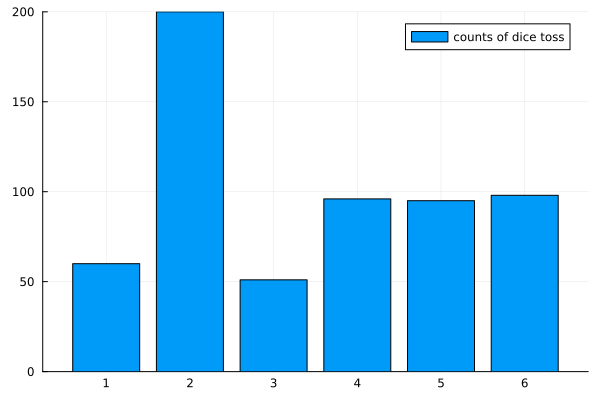
Équité du Dé
⚠️ Mêmes données, deux conclusions
\(H_0: p_6 = 1/6\) vs \(H_1: p_6 > 1/6\)
Ici : on ne rejette pas \(H_0\) (\(H_0\) est « vraisemblable »)
\(H_0:\) le dé est équilibré vs \(H_1: \exists k: p_k > 1/6\)
Ici : on rejette \(H_0\) (\(H_0\) est « peu vraisemblable »)
Test Médical
- Objectif : tester si un patient a un taux de cholestérol élevé
- Expérience : mesurer le taux de cholestérol LDL (mg/dL)
- Hypothèses :
- \(H_0\) : le cholestérol LDL est normal \(\sim \mathcal{N}(100, 25)\)
- \(H_1\) : le cholestérol LDL est élevé
Test Médical
- Règle de décision : rejeter si \(P_0(X \geq x_{obs}) \leq 0.05\)
- Collecter les données : \(x_{obs}=152\)
- Prendre une décision : calculer \(P_0(X \geq 152)=0.019\)
- Conclusion ?
Illustration
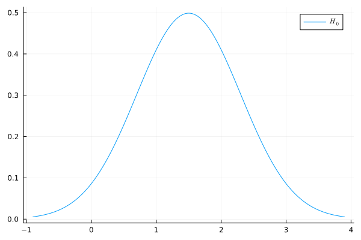
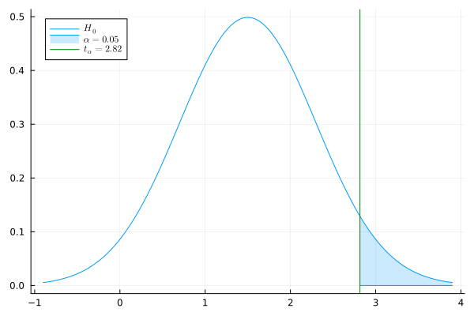
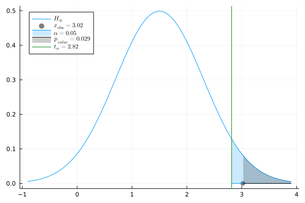
Rappels de Probabilités
Rappels de Proba : Mesures Continues
- Densité (PDF) : \(x \mapsto p(x)\) où \(\mathbb P(X\in[x,x+dx]) = p(x)dx\)
- Fonction de répartition (CDF) : \(x \mapsto \int_{-\infty}^x p(x')dx'\)
Quantile d’ordre \(\alpha\):
\(q_{\alpha}\) : \(\int_{-\infty}^{q_{\alpha}} p(x)dx = \alpha\)
\(\Leftrightarrow \mathbb P(X \leq q_{\alpha}) = \alpha\)
Rappels de Proba : Mesures Discrètes
Considérons une mesure de probabilité \(P\) sur \(\mathbb R\) avec \(X \sim P\).
- Fonction de masse (PMF) : \(\mathbb P(X=x) = P(\{x\})=p(x)\)
- Fonction de répartition (CDF) : \(x \mapsto \sum_{x' \leq x} p(x')\)
Lois Usuelles et Représentation Générale
Exemple : Loi Gaussienne
Gaussienne \(\mathcal N(\mu,\sigma)\) : \(p(x) = \frac{1}{\sqrt{2\pi \sigma^2}}e^{-\frac{(x-\mu)^2}{2\sigma^2}}\)
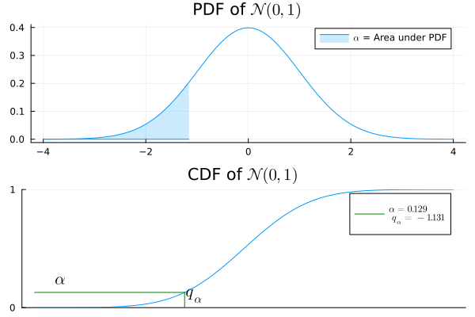
Approximation d’une somme de v.a. iid (TCL)
Exemple : Loi Binomiale
Binomiale \(\mathrm{Bin}(n,q)\) : \(p(x)= \binom{n}{x}q^x (1-q)^{n-x}\)
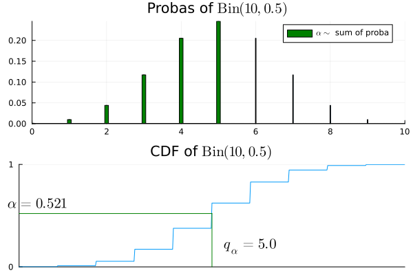
Nombre de succès parmi \(n\) épreuves de Bernoulli de paramètre \(q\)
Exemple : Loi Exponentielle
Exponentielle \(\mathcal E(\lambda)\) : \(p(x) = \lambda e^{-\lambda x}\)
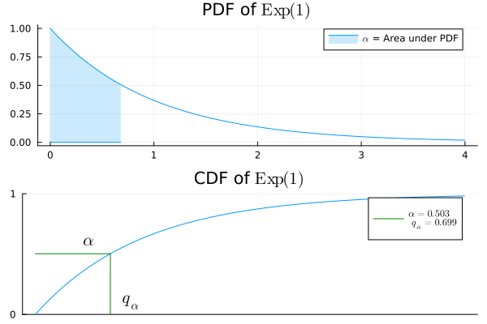
Temps d’attente d’une horloge atomique de taux \(\lambda\)
Exemple : Loi Géométrique
Géométrique \(\mathcal{G}(q)\) : \(p(x)= q(1-q)^{x-1}\)
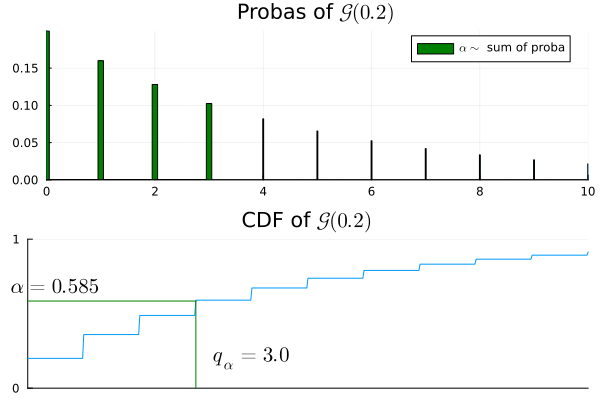
Indice du premier succès pour des Bernoulli iid de paramètre \(q\)
Exemple : Loi Gamma
Gamma \(\Gamma(k, \lambda)\) : \(p(x) = \frac{\lambda^k x^{k-1}e^{-\lambda x}}{(k-1)!}\)
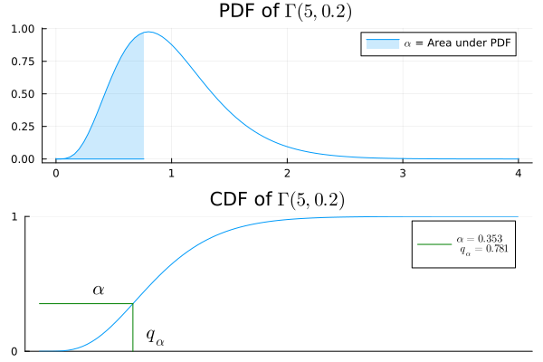
Temps d’attente pour \(k\) horloges atomiques de taux \(\lambda\)
Exemple : Loi de Poisson
Poisson \(\mathcal{P}(\lambda)\) : \(p(x)=\frac{\lambda^x}{x!}e^{-\lambda}\)
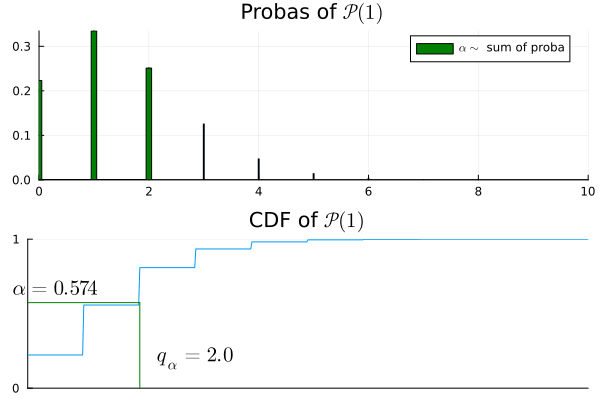
Nombre de tics avant le temps \(1\) d’une horloge de taux \(\lambda\)
Représentation Générale
analogies entre les distributions
Bases des Tests d’Hypothèses
Estimation VS Test
On observe des données \(X\) dans un espace mesurable \((\mathcal X, \mathcal A)\).
Exemple : \(\mathcal X = \mathbb R^n\), \(X= (X_1, \dots, X_n)\).
Estimation
- Un ensemble de distributions \(\mathcal P\) paramétré par \(\Theta\) \[\mathcal P = \{P_{\theta},~ \theta \in \Theta\}\]
- \(\exists \theta \in \Theta\) tel que \(X \sim P_{\theta}\)
Objectif : estimer une fonction de \(P_{\theta}\), par ex. \(\int x \, dP_{\theta}\) ou \(\int x^2 \, dP_{\theta}\)
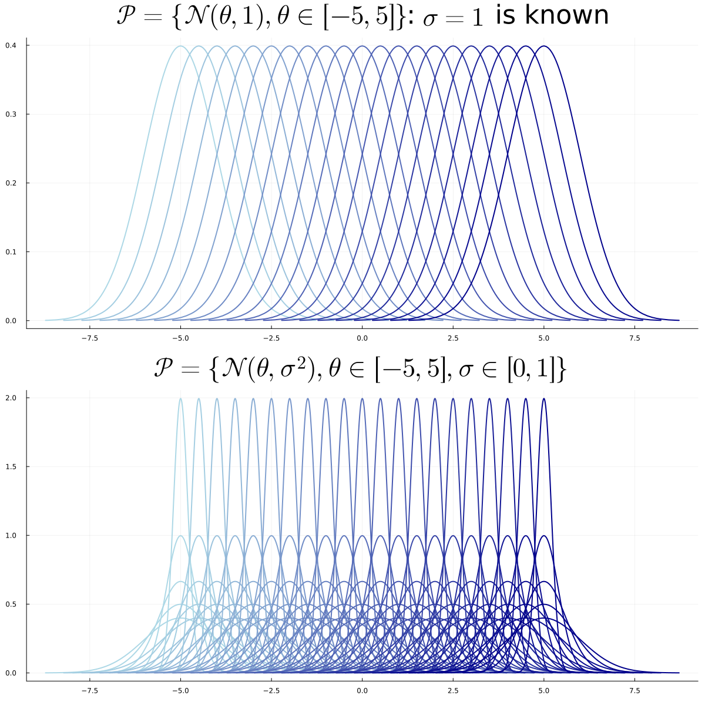
Test
- Deux ensembles de distributions \(\mathcal P_0\), \(\mathcal P_1\) avec \(\Theta_0\), \(\Theta_1\) disjoints \[\mathcal P_0 = \{P_{\theta} : \theta \in \Theta_0\}, ~~~~ \mathcal P_1 = \{P_{\theta} : \theta \in \Theta_1\}\]
- \(\exists \theta \in \Theta_0 \cup \Theta_1\) tel que \(X \sim P_{\theta}\)
Objectif : décider entre \(H_0: \theta \in \Theta_0\) ou \(H_1: \theta \in \Theta_1\)
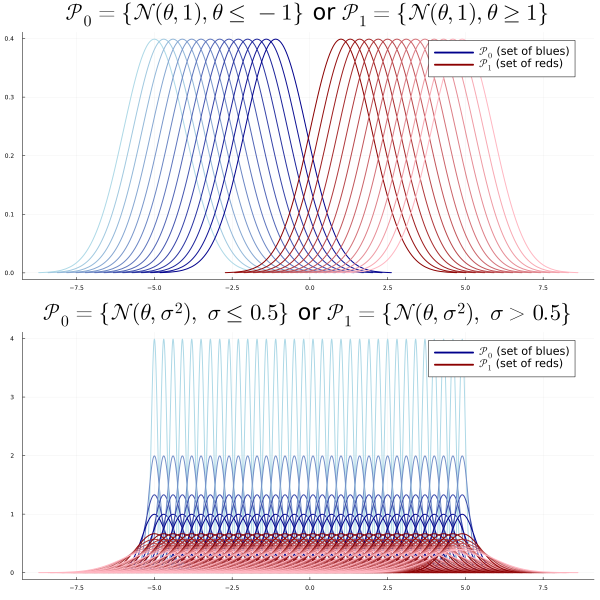
Modèle de Test
- Deux ensembles de distributions \(\mathcal P_0\), \(\mathcal P_1\) avec \(\Theta_0\), \(\Theta_1\) disjoints \[\mathcal P_0 = \{P_{\theta} : \theta \in \Theta_0\}, ~~~~ \mathcal P_1 = \{P_{\theta} : \theta \in \Theta_1\}\]
- \(\exists \theta \in \Theta_0 \cup \Theta_1\) tel que \(X \sim P_{\theta}\)
Objectif : décider entre \(H_0: \theta \in \Theta_0\) ou \(H_1: \theta \in \Theta_1\)
Types de Problèmes
- Simple VS Simple : \(\Theta_0 = \{\theta_0\}\) et \(\Theta_1 = \{\theta_1\}\)
- Simple VS Multiple : \(\Theta_0 = \{\theta_0\}\)
- Multiple VS Multiple : sinon
Simple VS Simple
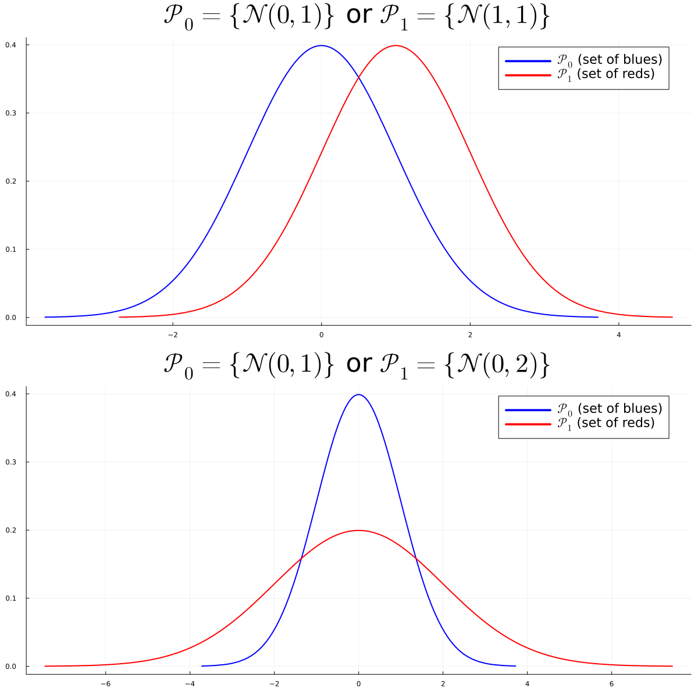
Multiple VS Multiple
Paramétrique VS Non-Paramétrique
- Paramétrique : \(\Theta_0\) et \(\Theta_1\) inclus dans des sous-espaces de dimension finie
- Non-paramétrique : sinon
Exemple (Multiple VS Multiple Paramétrique) :
- \(H_0: X \sim \mathcal N(\theta,\sigma)\), \(\theta < 0\), \(\sigma > 0\) → \(\Theta_0 \subset \mathbb R^2\)
- \(H_1: X \sim \mathcal N(\theta,\sigma)\), \(\theta > 0\), \(\sigma > 0\) → \(\Theta_1 \subset \mathbb R^2\)
Règle de Décision
Note
Une Règle de Décision ou Test \(T\) est une fonction mesurable : \[T : \mathcal X \to \{0,1\}\]
- Elle peut dépendre de \(\mathcal P_0\) et \(\mathcal P_1\)
- mais pas d’un paramètre inconnu ou de la distribution \(P \in \mathcal P_0 \cup \mathcal P_1\) par laquelle \(X\) est générée
- \(T(x) = 0\) (ou \(1\)) pour tout \(x\) est la règle de décision triviale
Statistique de Test
Note
Une Statistique de Test \(\psi\) est une fonction mesurable des données à valeurs réelles : \[\psi : \mathcal X \to \mathbb R\]
- Elle peut dépendre de \(\mathcal P_0\) et \(\mathcal P_1\)
- mais pas d’un paramètre inconnu ou de la distribution \(P \in \mathcal P_0 \cup \mathcal P_1\) par laquelle \(X\) est générée
Région de Rejet
Note
Pour un test \(T\) de statistique \(\psi\), la région de rejet ou zone de rejet \(\mathcal R \subset \mathbb R\) est : \[\mathcal R = \{\psi(x) \in \mathbb R:~ T(x)=1\}\]
- Ensemble des valeurs de la statistique qui conduisent à rejeter \(H_0\)
Région Critique
Note
Pour un test \(T\), la région critique \(\mathcal C \subset \mathcal X\) est : \[\mathcal C = \{x \in \mathcal X:~ T(x)=1\}\]
- Ensemble des observations qui conduisent à rejeter \(H_0\)
- ⚠️ Ces termes sont parfois utilisés de manière interchangeable, mais nous les distinguons dans ce cours.
Exemple de Région de Rejet
\[ \begin{aligned} T(x) &= \mathbf{1}\{\psi(x) > t\}:~~~~~~\mathcal R = (t,+\infty)\\ T(x) &= \mathbf{1}\{\psi(x) < t\}:~~~~~~\mathcal R = (-\infty,t)\\ T(x) &= \mathbf{1}\{|\psi(x)| > t\}:~~~~~~\mathcal R = (-\infty,t)\cup (t, +\infty)\\ T(x) &= \mathbf{1}\{\psi(x) \not \in [t_1, t_2]\}:~~~~~~\mathcal R = (-\infty,t_1)\cup (t_2, +\infty)\; \end{aligned} \]
Simple VS Simple
Problème Simple VS Simple
On observe \(X \in \mathcal X=\mathbb R^n\). On fixe deux distributions connues \(P\) et \(Q\).
Le problème :
\(H_0: X \sim P\) ou \(H_1: X \sim Q\)
Warning
On connaît \(P\) et \(Q\) mais on ne sait pas si \(X \sim P\) ou \(X \sim Q\)
Niveau et Puissance
Niveau et Puissance
Considérons un problème simple VS simple. Le Niveau d’un test \(T\) est défini par
\[\alpha = P(T(X)=1) = P(X \in \mathcal C) \quad \text{(erreur de 1ère espèce)}\]
Sa puissance est définie par
\[\beta = Q(T(X)=1) = Q(X \in \mathcal C)\]
\(1 - \beta\) est l’erreur de 2ème espèce
Table de Décision
| Décision | \(H_0: X \sim P\) | \(H_1: X \sim Q\) |
|---|---|---|
| \(T=0\) | ✓ \(1-\alpha\) | ✗ \(1-\beta\) |
| \(T=1\) | ✗ \(\alpha\) | ✓ \(\beta\) |
Sans biais : \(\beta \geq \alpha\)
\(\alpha = 0\) pour le test trivial \(T(x)=0\)… mais \(\beta = 0\) aussi !
Test du Rapport de Vraisemblance
Considérons le problème simple VS simple \(H_0\) : \(X \sim P\) VS \(H_1\) : \(X \sim Q\).
Question : quel test \(T\) maximise \(\beta\) à \(\alpha\) fixé ?
Statistique du rapport de vraisemblance
\[\psi(x)=\frac{dQ}{dP}(x) = \frac{q(x)}{p(x)}\]
Test du Rapport de Vraissemblance
Test du rapport de vraisemblance
\[T^*(x)=\mathbf 1\left\{\frac{q(x)}{p(x)} > t_{\alpha}\right\}\]
où \(t_{\alpha}\) est le quantile d’ordre \(\alpha\) : \[\mathbb P_{X \sim P}\left(\frac{q(X)}{p(X)} > t_{\alpha}\right) = \alpha\]
Théorème de Neyman-Pearson
Théorème de Neyman-Pearson
Le test du rapport de vraisemblance de niveau \(\alpha\) maximise la puissance parmi tous les tests de niveau \(\alpha\).
Rappel : \(T^*(x)=\mathbf 1\left\{\frac{q(x)}{p(x)} > t_{\alpha}\right\}\) où \(P(T^*(X)=1) = \alpha\)
Équivalent au test du log-rapport de vraisemblance :
\[T^*(x)=\mathbf 1\left\{\log\left(\frac{q(x)}{p(x)}\right) > \log(t_{\alpha})\right\}\]
Neyman-Pearson : Esquisse de Preuve
Soit \(T\) un test quelconque de niveau \(\alpha\). On veut montrer que \(\beta^* \geq \beta\).
\[\beta^* - \beta = Q(T^*=1) - Q(T=1) = \int (T^* - T) dQ\]
\[= \int (T^* - T) \frac{q}{p} dP\]
Suite de l’esquisse de preuve
\[\beta^* - \beta = \int (T^* - T) \frac{q}{p} dP\]
Sur \(\{T^*=1\}\) : \(\frac{q}{p} > t_\alpha\) et \((T^* - T) \geq 0\)
Sur \(\{T^*=0\}\) : \(\frac{q}{p} \leq t_\alpha\) et \((T^* - T) \leq 0\)
\[\Rightarrow \beta^* - \beta \geq t_\alpha \int (T^* - T) dP = t_\alpha (\alpha - \alpha) = 0 ~~~ \square\]
Neyman-Pearson : Exemple
Exemple : \(X \sim \mathcal N(\theta, 1)\) avec \(H_0: \theta=\theta_0\) et \(H_1: \theta=\theta_1\)
Log-rapport de vraisemblance : \[\log\frac{q(x)}{p(x)} = (\theta_1 - \theta_0)x + \frac{\theta_0^2 -\theta_1^2}{2}\]
Si \(\theta_1 > \theta_0\), le test optimal est : \[T(x) = \mathbf 1\{ x > t \}\]
Exemple : Gaussiennes avec \(n\) Observations
Soit \(P_{\theta} = \mathcal N(\theta,1)\). On observe \(n\) données iid \(X = (X_1, \dots, X_n)\).
- \(H_0: X \sim P^{\otimes n}_{\theta_0}\) ou \(H_1: X \sim P^{\otimes n}_{\theta_1}\)
- Note : \(P^{\otimes n}_{\theta}= \mathcal N((\theta,\dots, \theta), I_n)\)
Densité de \(P^{\otimes n}_{\theta}\) : \[\frac{d P^{\otimes n}_{\theta}}{dx} = \frac{1}{\sqrt{2\pi}^n}\exp\left(-\frac{\|x\|^2}{2} + n\theta \overline x - \frac{n\theta^2}{2}\right)\]
Exemple : Gaussiennes (suite)
Test du log-rapport de vraisemblance :
\(T(x) = \mathbf 1\{\overline x > t_{\alpha}\}\) si \(\theta_1 > \theta_0\)
\(T(x) = \mathbf 1\{\overline x < t_{\alpha}\}\) sinon
Généralisation : Familles Exponentielles
Définition
Un ensemble de distributions \(\{P_{\theta}\}\) est une famille exponentielle s’il existe des fonctions à valeurs réelles \(a,b,c,d\) telles que : \[p_{\theta}(x) = a(\theta)b(x) \exp(c(\theta)d(x))\]
Test pour les Familles Exponentielles
Test du rapport de vraisemblance pour les familles exponentielles
Considérons le problème de test \(H_0: X \sim P_{\theta_0}^{\otimes n}\) vs \(H_1: X \sim P_{\theta_1}^{\otimes n}\)
Alors, le test du rapport de vraisemblance est
\[T(X) = \mathbf 1\left\{\frac{1}{n}\sum_{i=1}^n d(X_i) > t\right\}\]
(calibrer \(t\) pour atteindre le niveau \(\alpha\))
Preuve
On observe \(X = (X_1, \dots, X_n)\). Considérons le problème de test suivant :
\[H_0: X \sim P_{\theta_0}^{\otimes n} \quad \text{ou} \quad H_1: X \sim P_{\theta_1}^{\otimes n}.\]
\[\frac{dP_{\theta_1}^{\otimes n}}{dP_{\theta_0}^{\otimes n}} = \left(\frac{a(\theta_1)}{a(\theta_0)}\right)^n \exp\left((c(\theta_1) - c(\theta_0)) \sum_{i=1}^n d(x_i)\right).\]
\[T(X) = \mathbf{1}\left\{\frac{1}{n}\sum_{i=1}^n d(X_i) > t\right\}. \quad (\text{calibrer } t)\]
Exemple : La Loi de Poisson est une Famille Exponentielle
Loi de Poisson : \(p_\lambda(x) = \frac{\lambda^x}{x!}e^{-\lambda}\)
Réécriture :
\[p_\lambda(x) = \underbrace{e^{-\lambda}}_{a(\lambda)} \cdot \underbrace{\frac{1}{x!}}_{b(x)} \cdot \exp\left(\underbrace{\log\lambda}_{c(\lambda)} \cdot \underbrace{x}_{d(x)}\right)\]
→ La loi de Poisson est une famille exponentielle avec \(d(x) = x\)
Exemple : La Loi Binomiale est une Famille Exponentielle
Loi binomiale : \(p_q(x) = \binom{n}{x}q^x(1-q)^{n-x}\)
Réécriture :
\[p_q(x) = \underbrace{(1-q)^n}_{a(q)} \cdot \underbrace{\binom{n}{x}}_{b(x)} \cdot \exp\left(\underbrace{\log\frac{q}{1-q}}_{c(q)} \cdot \underbrace{x}_{d(x)}\right)\]
Exemple : Source Radioactive
- Les particules émises en 1 unité de temps suivent une loi \(\mathcal P(\lambda)\)
- On observe 20 unités de temps : \(N \sim \mathcal P(20\lambda)\)
- Type A : \(\lambda_0 = 0.6\) particules/unité de temps
- Type B : \(\lambda_1 = 0.8\) particules/unité de temps
\(H_0\) : \(N \sim \mathcal P(12)\) vs \(H_1\) : \(N \sim \mathcal P(16)\)
Source Radioactive : Test
\[T(N)=\mathbf 1\left\{N > t_{\alpha}\right\}\]
Calcul de \(t_{0.05}\) :
quantile(Poisson(12), 0.95)→ \(18\)1-cdf(Poisson(12), 17)→ \(0.063\)1-cdf(Poisson(12), 18)→ \(0.038\)
→ Rejeter \(H_0\) si \(N \geq 19\)
Tests Multiple-Multiple
Attention
\(H_0 = \mathcal P_0=\{P_{\theta}, \theta \in \Theta_0 \}\) n’est pas un singleton
\(H_1 = \mathcal P_0=\{P_{\theta}, \theta \in \Theta_0 \}\) n’est pas un singleton
Warning
Pas de sens de \(\mathbb P_{H_0}(X \in A)\) ou \(\mathbb P_{H_1}(X \in A)\)
Niveau et Puissance
Note
Le Niveau d’un test \(T\) est défini par
\[\alpha = \sup_{\theta \in \Theta_0}P_{\theta}(T(X)=1)\]
Sa fonction de puissance est définie par
\[\beta: \Theta_1 \to [0,1]:~ \beta(\theta) = P_{\theta}(T(X)=1)\]
\(T\) est sans biais si \(\beta(\theta) \geq \alpha\) pour tout \(\theta \in \Theta_1\)
Uniformément Plus Puissant (UPP)
Si \(T_1\), \(T_2\) sont deux tests de niveau \(\alpha_1\), \(\alpha_2\) :
\(T_2\) est uniformément plus puissant (UPP) que \(T_1\) si :
- \(\alpha_2 \leq \alpha_1\)
- \(\beta_2(\theta) \geq \beta_1(\theta)\) pour tout \(\theta \in \Theta_1\)
\(T^*\) est UPP\(_{\alpha}\) s’il est UPP par rapport à tout autre test de niveau \(\alpha\)
Tests Unilatéraux
Hypothèse : \(\Theta_0 \cup \Theta_1 \subset \mathbb R\)
Unilatéral droit : \(H_0: \theta \leq \theta_0\) vs \(H_1: \theta > \theta_0\)
Unilatéral gauche : \(H_0: \theta \geq \theta_0\) vs \(H_1: \theta < \theta_0\)
Tests Bilatéraux
Simple/Multiple : \(H_0: \theta = \theta_0\) vs \(H_1: \theta \neq \theta_0\)
Multiple/Multiple : \(H_0: \theta \in [\theta_1, \theta_2]\) vs \(H_1: \theta \not\in [\theta_1, \theta_2]\)
UPP pour les Familles Exponentielles
Théorème
Supposons que \(p_{\theta}(x) = a(\theta)b(x)\exp(c(\theta)d(x))\) avec \(c\) croissante.
Pour un test unilatéral, il existe un test UPP\(_\alpha\). Il est de la forme :
\[T = \mathbf 1\left\{\sum d(X_i) > t \right\}\]
pour un test unilatéral droit (\(H_1: \theta > \theta_0\)), on inverse simplement l’inégalité.
Idem si \(c\) est décroissante.
Statistique de Test Pivotale et P-valeur
Ici, \(\Theta_0\) n’est pas nécessairement un singleton. \(\mathbb P_{H_0}(X \in A)\) n’a pas de sens sans hypothèse supplémentaire.
Statistique de Test Pivotale
\(\psi: \mathcal X \to \mathbb R\) est pivotale si la loi de \(\psi(X)\) sous \(H_0\) ne dépend pas de \(\theta \in \Theta_0\) :
pour tous \(\theta, \theta' \in \Theta_0\), et tout événement \(A\), \[ \mathbb P_{\theta}(\psi(X) \in A) = \mathbb P_{\theta'}(\psi(X) \in A) \; .\]
Puisque \(\psi\) est pivotale, on peut écrire \(\mathbb{P}_{H_0}(\cdot)\) sans ambiguïté pour les probabilités impliquant \(\psi(X)\) sous \(H_0\).
Exemple
Si \(X=(X_1, \dots, X_n)\) sont iid \(\mathcal N(0, \sigma)\), la loi de \[ \psi(X) = \frac{\sum_{i=1}^n X_i}{\sqrt{\sum_{i=1}^n X_i^2}}\] ne dépend pas de \(\sigma\).
En effet, en écrivant \(X_i = \sigma Z_i\) avec \(Z_i \overset{\text{iid}}{\sim} \mathcal N(0,1)\), \[ \psi(X) = \frac{\sum_{i=1}^n \sigma Z_i}{\sqrt{\sum_{i=1}^n \sigma^2 Z_i^2}} = \frac{\sigma \sum_{i=1}^n Z_i}{\sigma\sqrt{\sum_{i=1}^n Z_i^2}} = \frac{\sum_{i=1}^n Z_i}{\sqrt{\sum_{i=1}^n Z_i^2}} \; .\]
Statistique de Test Pivotale et P-valeur
P-valeur : définition
On définit \(p_{value}(x_{\mathrm{obs}}) =\mathbb P(\psi(X) \geq x_{\mathrm{obs}})\) pour un test unilatéral droit.
Pour un test bilatéral, \(p_{value}(x_{\mathrm{obs}}) =2\min(\mathbb P(\psi(X) \geq x_{\mathrm{obs}}),\mathbb P(\psi(X) \leq x_{\mathrm{obs}}))\)
- En pratique : rejeter si \(p_{value}(x_{\mathrm{obs}}) \leq \alpha = 0.05\)
- \(\alpha\) est le niveau ou erreur de première espèce du test
Illustration si \(\psi(X) \sim \mathcal N(0,1)\) :
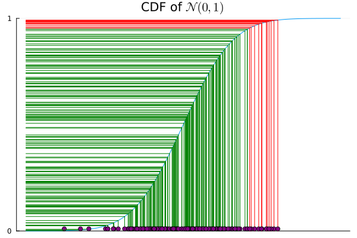
Propriété
On considère un test qui rejette \(H_0\) pour les grandes valeurs de \(\psi\). Au niveau \(\alpha \in (0,1)\), la région de rejet est
\[ \mathcal{R}_\alpha = \bigl\{ x \in \mathcal{X} : \psi(x) > c_\alpha \bigr\}, \] où \(c_\alpha\) est la valeur critique satisfaisant \(\mathbb{P}_{H_0}(\psi(X) > c_\alpha) = \alpha\).
Propriété
La p-valeur est le plus petit niveau \(\alpha\) auquel on rejette \(H_0\) : \[ p(x) = \inf\bigl\{\alpha \in (0,1) : x \in \mathcal{R}_\alpha\bigr\}. \]
Exemple 1 : Test Gaussien à un échantillon
\(X_1, \dots, X_n \overset{\text{iid}}{\sim} \mathcal N(\mu, \sigma_0)\) avec \(\sigma_0\) connue. Test \(H_0: \mu = 0\) vs \(H_1: \mu \neq 0\).
La statistique pivotale est \[ \psi(X) = \frac{\sqrt{n}\,\overline{X}}{\sigma_0} \sim \mathcal N(0,1) \quad \text{sous } H_0 \; .\]
Exemple Numérique
\(n=25\), \(\sigma_0 = 2\), \(\overline{x}_{\mathrm{obs}} = 0.9\).
\[\psi(x_{\mathrm{obs}}) = \frac{\sqrt{25} \times 0.9}{2} = 2.25\]
P-valeur bilatérale : \(p_{value} = 2\,\mathbb P(Z \geq 2.25) = 2 \times 0.0122 = 0.0244\).
Puisque \(p_{value} = 0.0244 \leq \alpha = 0.05\), on rejette \(H_0\).
Exemple 2 : Test t à un échantillon
\(X_1, \dots, X_n \overset{\text{iid}}{\sim} \mathcal N(\mu, \sigma)\) avec \(\sigma\) inconnue. Test \(H_0: \mu = 0\) vs \(H_1: \mu > 0\).
On utilise la statistique de test suivante : \[ \psi(X) = \frac{\sqrt{n}\,\overline{X}}{S} \sim t_{n-1} \quad \text{sous } H_0\] où \(S^2 = \frac{1}{n-1}\sum_{i=1}^n (X_i - \overline{X})^2\). Le paramètre \(\sigma\) se simplifie (comme dans la diapositive précédente), donc \(\psi\) est pivotale sur \(\Theta_0 = \{(\mu, \sigma): \mu = 0,\, \sigma > 0\}\).
Exemple numérique : \(n=10\), \(\overline{x}_{\mathrm{obs}} = 1.5\), \(s = 2.1\).
\[\psi(x_{\mathrm{obs}}) = \frac{\sqrt{10} \times 1.5}{2.1} = 2.26\]
P-valeur unilatérale droite : \(p_{value} = \mathbb P(T_9 \geq 2.26) = 0.025\).
Puisque \(p_{value} = 0.025 \leq \alpha = 0.05\), on rejette \(H_0\).
Propriété de la p-valeur
P-valeur sous \(H_0\)
Sous \(H_0\), pour un test unilatéral gauche ou droit, pour une statistique de test pivotale \(\psi\), \(p_{value}(X)\) suit une loi uniforme \(\mathcal U([0,1])\).
Ainsi, si les données suivent vraiment l’hypothèse nulle et si on teste au niveau \(5\%\),
réaliser \(1000\) expériences conduira en moyenne à rejeter \(50\) fois
Preuve (cas unilatéral droit)
Soit \(F\) la fonction de répartition de \(\psi(X)\) sous \(H_0\). Supposons pour simplifier qu’elle est strictement croissante. Alors \[p_{value}(X) = 1 - F(\psi(X)) \; .\]
Pour tout \(t \in [0,1]\),
\[\mathbb P_{H_0}(p_{value}(X) \leq t) = \mathbb P_{H_0}(1 - F(\psi(X)) \leq t) = \mathbb P_{H_0}(\psi(X) \geq F^{-1}(1-t)) \; .\]
D’où,
\[\mathbb P_{H_0}(p_{value}(X) \leq t) = 1- F(F^{-1}(1-t))= t\]